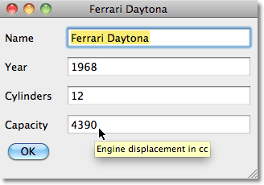

Simple Tooltips
この例では、前章のObject Editorにhelp tooltipsを追加する方法を紹介します。tooltip textは、CLOSオブジェクトの定義にある:documentationフィールドから自動的に抽出されます
例
前の例に収容人数(capacity)のテキストフィールドを加えるために、オブジェクトに:documentationを加えます。
(defclass classic-car () ((name :initarg :name :accessor name) (year :initarg :year :type integer) (cylinders :initarg :cylinders :type integer) (capacity :initarg :capacity :type integer :documentation "Engine displacement in cc")))
こうすることで次のようなtooltipが表示されます。

The implementation
tooltipsを追加するために、Object Editorの定義を次のように変更する必要があります。
まず、edit-windowクラスの定義に:help-callback initarg を追加します:
(defclass edit-window (capi:interface) ((thing :initarg :thing :accessor thing)) (:default-initargs :help-callback #'do-tooltip-help))
次にhelp textを提供するdo-tooltip-helpを定義します。
(defun do-tooltip-help (interface pane type key)
(declare (ignorable interface pane))
(when (eq type :tooltip)
(documentation
(find key (clos:class-slots (class-of (thing interface)))
:key 'clos:slot-definition-name) t)))
これは、スロットのdocumentationと、編集ウィンドウに表示されているオブジェクトのクラスを抽出します
最後に、それぞれのtooltipで表示されるテキストきめるために、スロット定義の:documentationフィールドにテキストを定義しましょう。
(defclass classic-car ()
((name :initarg :name :accessor name)
(year :initarg :year :type integer :documentation "Year first introduced")
(cylinders :initarg :cylinders :type integer :documentation "Number of cylinders")
(capacity :initarg :capacity :type integer :documentation "Engine displacement in cc")))